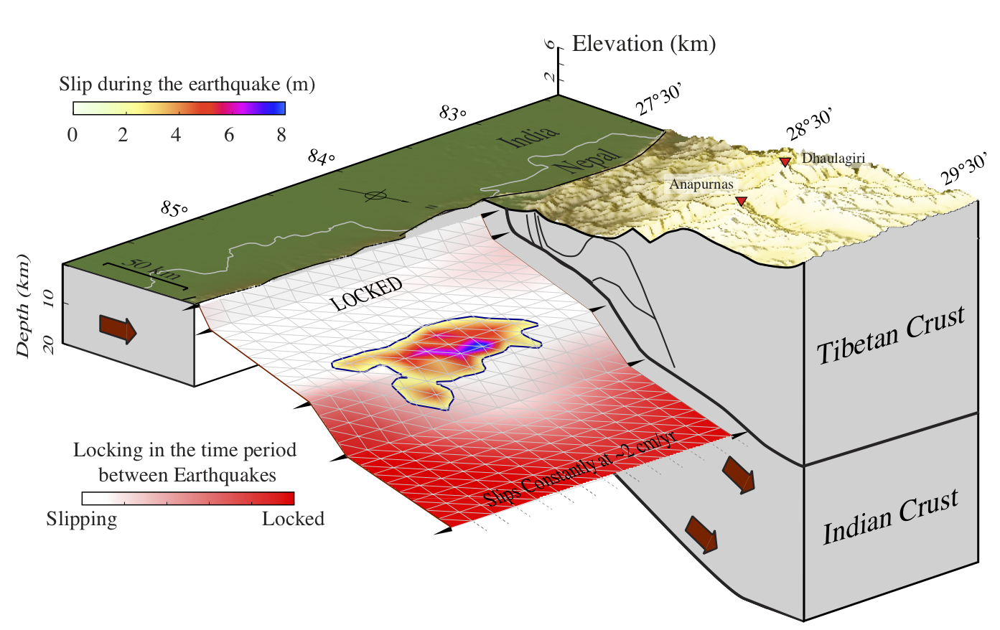

CSI user manual¶
CSI stands for Classic Slip Inversion. In brief, it allows to quickly build scripts that will allow to obtain the slip distribution along a fault for an earthquake given some geodetic and seismological data. Here is an example of what kind of model you can get. This is a simplified version of the slip distribution and coupling map we have built for the Nepal earthquake in 2015. This figure has been made with GMT from the output of CSI.
{kind=link}
Overview¶
This library has been designed to handle what is simple in fault slip inversions and especially what should not be re-written everytime a new students comes to work. No one should have to decide how to implement a fault or insar data in python before trying to run an inverse problem because it is not interesting (the inverse problem is interesting and should be dealt with great care). Therefore, we have put together this set of python classes that can interact together and allow anyone to set up his own problem.
Because we do not aim at solving everyone’s problems, this code is open and can be augmented if you feel like it. Do not hesitate to contact us and share potentially new capabilities.
This manual is minimal… We are aware of it… But until someone manages to lock the authors for enough time in a room with a computer and enough food, there will not be a better one. Luckily, we answer emails and if we are interested in the project, we can help.
Here is a non-exhaustive list of basic capabilities:
Simplifies construction of multi-patch faults with rectangular, triangular and node based parameterization
For each of the fault parameterizations, allows construction of GFs (homogeneous or stratified elastic structure)
Handles various geodetic data types - SAR (offsets or interferometry) - GPS (hence tide gauges which is a vertical GPS, as everyone knows) - Optical cross-correlation measurements
Allows to manipulate the data - Read, plot, make profiles of InSAR time series (no time-dependent modeling yet). - Extracts empirical covariance functions from satellite imagery data - Downsample satellite imagery data: gradient based (Jonson et al 2002), curvature based (Simons et al 2002) or model based (Lohman et al 2005)
Makes profiles across displacements fields (any kind), plot faults in 2-3D, plot displacement maps and vectors, coastlines, political boundaries, etc
Tools for fault slip inversions: - Solves for slip distribution using constrained LSQ or classic MCMC (less than ~40 parameters). - Can provide the input files for AlTar (Bayesian solver of M. Simons’ group @CalTech, available here) - Some tools to handle kinematic slip inversions.
To cite CSI, please use the doi of the code provided by Github or see the citation page.
Contacts¶
To contact us, please visit our websites:
Romain Jolivet @Ecole Normale Superieure: http://www.geologie.ens.fr/~jolivet
Zacharie Duputel @IPGP: https://zduputel.github.io
Mark Simons @CalTech: http://www.gps.caltech.edu/~simons